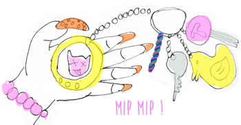

Miam ! Miam !
Hé non, unix n’est pas un nouveau biscuit chocolaté genre mars ou sneaker, c’est un noyeau et il y en a dans tous les ordinateurs, on appelle ça un système d’exploitation, Hein? Tu dis? Un système multitâches, multi-utilisateurs. En gros, un truc qui permet de faire pleins de choses en même temps à pleins de gens différents. Les familles les plus connues, et ça même si on est des loosers on le sait parce qu’on ne s’est pas arrêté au minitel et au tamagoshi, sont OS Mac, Windows, Linux et des tas d’autres que je ne connais absolument pas.
Maintenant, je vais vous annoncer un truc de MABOULE. Vous avez déjà vu Matrix? Bah, dans votre ordi, c'est comme ça à l'interieur : une fenêtre noire avec des choiffres et des lettres, momomotus ! et aussi des tas de signe cabalistiques. Ce que vous voyez à l'écran, c'est la partie immergée de l'iceberg. Tous vos répertoires, votre bureau, vos fichiers, la manière dont vous cliquez dessus pour y accéder comme des cliqueurs, c'est de la peau, du make-up, z'êtes vraiment pas naturels les gars ! Et en dessous de la peau ? Qu'est ce qu'il y a ? des zos et des muscles. Bah voilà, c'est tout pareil dans votre ordi. C'est la partie obscure de la force. Si vous voulez faire une autopsie et mater comment ça se passe à l'interieur, il vous suffit de taper "terminal dans votre "spotlight". ça vous branche? Prenez la pilule rouge ou la bleus, c'est parti mon geeki !
Tout ce que vous pouvez faire avec votre souris pour niaviguer sur votre ordi, vous pouvez le faire en lignes de commande sur votre terminal. Je vous renvoie à mon super sheet cheat sheet, pour vous éclairer sur les manip de base.
Mais à quoi qu'ça sert dirait Toto ? C'etst exactement qu'est ce que je me suis posée comme question ! En fait, quand on sera devenu trop fortiches sa mére -parce que le but, c'est quand même de devenir des dév en béton- ça nous permettra de 1, de comprendre la machine et de déboguer les blémes à fond d'balle, de gagner un temps de ouf, parce qu'on ne cliquera plus commes des savates à 2 à l'heure sur chaque icône, chaque dossier. Nous, on sera des fangios de la ligne de commande ! De deux, ça nous oblige un peu à sortir de notre p'tite routine pépouze où on ne se pose pas de question, et c'est pas comme ça qu'on avance sur le chemin de la geek attitude. En somme, Orélius n'a qu'à bien se tenir, on n'arrive en force, peut aller se faire reboucher son trou de zboub crânien, vlà !
Bon alors ça se complique, chaque système d'exploitation a ses spécificités, je vais parler pour os mac car je bosse sur cette bécane.
Appuis sur "play" nigga !